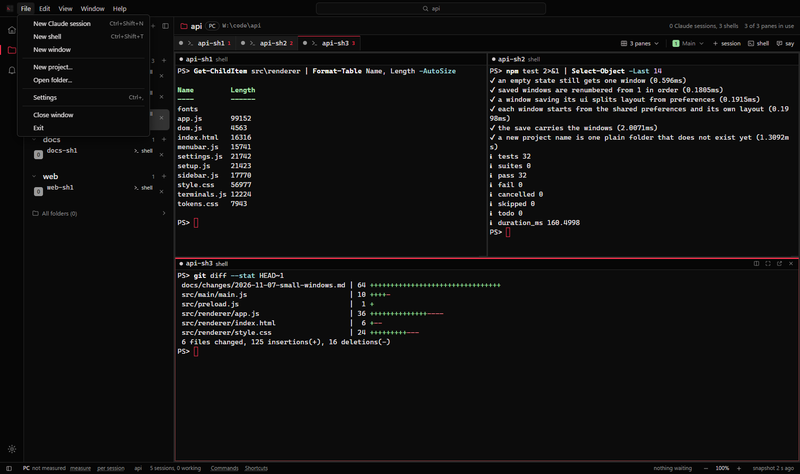
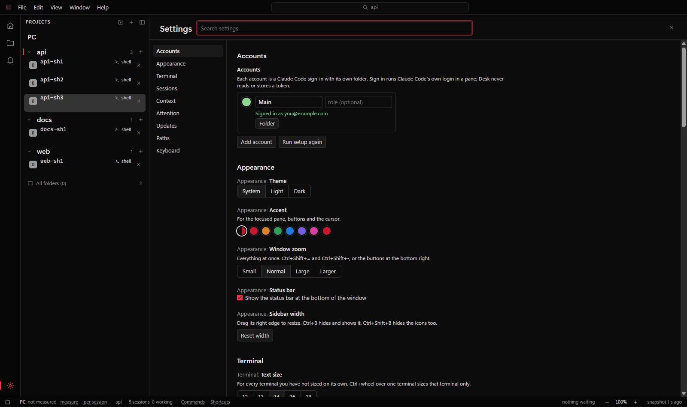
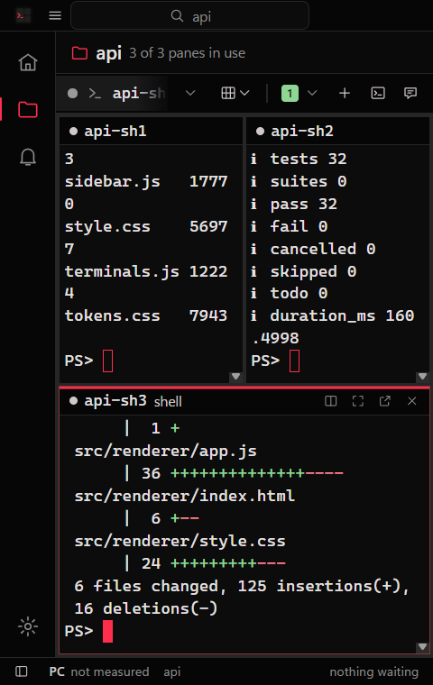
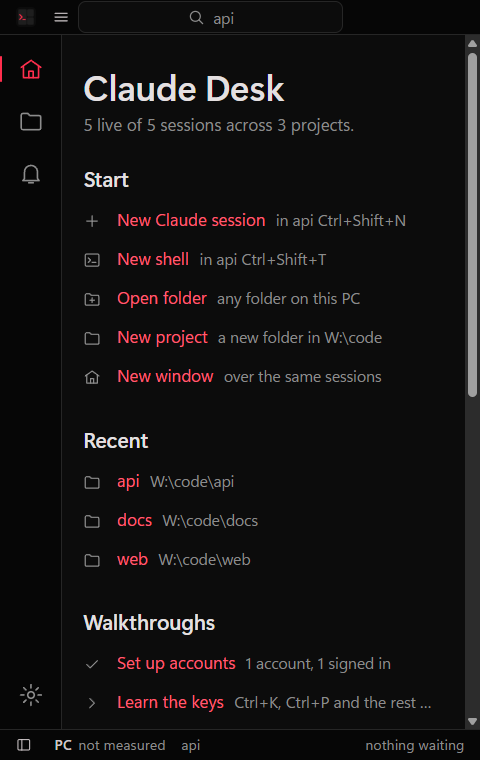
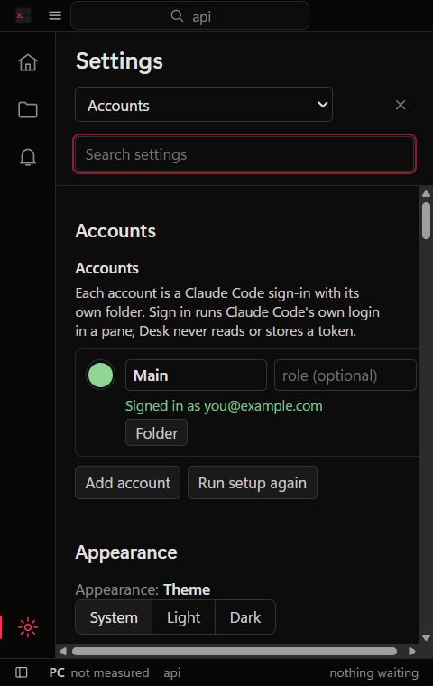

Guide
How Desk runs sessions, keeps accounts apart, and lays them out in panes and windows.
Sessions
Pick a project in the sidebar and press the session button, or Ctrl+Shift+N. Ctrl+Shift+T opens a plain shell in the same folder. Each session is a real Claude Code process; Desk only draws its terminal.
- The glyph next to a session is its state: working, waiting for you, finished, failed or idle. A session started outside Desk in the same folder shows greyed, so nothing gets opened twice.
- Stop keeps the session. Resume brings the same conversation back by its session id. Forget removes it from Desk; transcripts stay where Claude Code puts them.
- Say to Claude sessions (Edit menu) sends one message to the idle Claude sessions in the projects you tick. Busy sessions are skipped and named, because typed text would answer whatever prompt they have open.
- The bell, the window title and the taskbar flash count the sessions that need you.
Accounts
Add as many accounts as you like, in setup or in Settings, Accounts. Each one gets its own
Claude Code config folder (CLAUDE_CONFIG_DIR), so logins, history and settings
stay apart. A new account's folder lives in Desk's data folder, or you can point it at a
config folder you already have.
Sign in runs Claude Code's own login in a pane, with that account's folder. Desk never sees, reads or stores your token. When the login is done the account turns green.
A new account shares your skills, agents, commands, plugins and CLAUDE.md with
the main account through directory junctions, so you keep one copy. Junctions need no admin
rights. Every session wears its account's colour in the sidebar and tabs.
Desk shows each account's five-hour and seven-day limits, or its cost this month for
API-key accounts. It reads them from a status line it gives its own sessions, so this costs no
tokens and makes no network calls. If an account already has its own statusLine,
Desk leaves it alone and shows no usage for that account.
Context and tokens
Desk can add a line to each session's system prompt. It is off by default.
| Setting | What Desk adds | About |
|---|---|---|
| Nothing | nothing | 0 tokens |
| Name | "You are <name> in Claude Desk, working in <project>." | 12 tokens |
| Name and team | the name line plus the other sessions in the project | 26 tokens with 2 peers |
Token counts are characters divided by four, measured from the arguments Desk builds. When a session is resumed after Desk was closed in the middle of a turn, an optional one-line note (about 24 tokens) tells Claude to carry on. That is off by default too.
Panes
The tab strip lists every session of the current project. Click one to show it in the focused pane, or drag it onto a pane. Ctrl+Shift+1 to Ctrl+Shift+8 set the number of panes; Ctrl+1 to Ctrl+8 focus one. Each pane header has buttons to add a pane, maximise this one, move it to a new window and close it.
The sidebar header has a hide button, and Ctrl+B does the same. Clicking the active icon in the activity bar also hides it.
Windows
File, New window opens another window over the same sessions. Each window keeps its own project, panes and layout, and Desk reopens every window at its saved size on the next start.
A session shows in one window at a time. Move pane to a new window (Ctrl+Shift+M) takes the focused pane out: the process keeps running and its output carries on in the new window. The other window marks the session "in window 2"; click it to go there, or drag it back onto a pane. The Window menu lists every open window and can move a pane to any of them.
Closing a window that is not the last one only closes that window, and its sessions keep running. Closing the last window stops the sessions it hosts; the saved ones come back one at a time on the next start.
Menus

| File | New Claude session, new shell, new window, new project, open folder, settings, close window, exit |
| Edit | Copy, paste, select all, say to Claude sessions |
| View | Command palette, go to, Desk home, projects, needs you, sidebar, left panel, status bar, panes 1-8, zoom, theme, full screen |
| Window | New window, move pane to a new window, move pane to another window, close window, the window list |
| Help | Welcome, keyboard shortcuts, these docs, release notes, report an issue, open the log, open the state folder, about |
Alt opens the menus when no terminal has focus. Inside a terminal Alt stays with Claude Code. New project creates the folder under your projects folder and refuses names Windows reserves.
Settings
Ctrl+, opens Settings as a full page. Search finds a setting by its name, its description or a related word ("font", "ram", "notify"). A changed setting gets a bar on the left and a reset button.

| Accounts | Add, sign in, colour, config folder, remove |
| Appearance | Theme, accent, window zoom, status bar, sidebar width |
| Terminal | Text size, font, reset every zoom |
| Sessions | Which start with Desk, carry on after a restart, memory per session, GPU or software painting |
| Context | Session context, usage limits |
| Attention | Taskbar flash, desktop notifications |
| Updates | Automatic updates, check now |
| Paths | Projects folder, Claude Code, shell, state folder |
| Keyboard | Every key, as below |
Keys
Ctrl+/ or F1 shows this list in the app.
| Ctrl+K | Command palette |
| Ctrl+P | Go to a project or session |
| Ctrl+Shift+N | New Claude session |
| Ctrl+Shift+T | New shell |
| Ctrl+Shift+M | Move the focused pane to a new window |
| Ctrl+1 to 8 | Focus a pane |
| Ctrl+Shift+1 to 8 | One to eight panes |
| Ctrl+Tab, Ctrl+Shift+Tab | Next or previous session in the pane |
| Ctrl+B, Ctrl+Shift+B | Sidebar, whole left panel |
| Ctrl+, | Settings |
| Ctrl+= Ctrl+- Ctrl+0 | Zoom the focused terminal |
| Ctrl+Shift+= Ctrl+Shift+- Ctrl+Shift+0 | Zoom the whole window |
| Ctrl+wheel | Zoom whatever is under the pointer |
| Ctrl+C | Copy when text is selected, otherwise sent to the terminal |
| Ctrl+V, right click | Paste. Right click copies instead when text is selected |
| Ctrl+click | Open a link |
| Alt | Menus, when no terminal has focus |
| F11 | Full screen |
| Esc | Close a menu or the palette, clear the toasts |
In the sidebar, the arrows move, Enter opens, Right reaches a row's buttons, Left goes back and Delete stops a session. Every other key goes to the terminal.
Small windows
A window can be as small as 480 by 360, which suits a pane moved out on its own. Under 900 wide the sidebar opens over the panes and closes when you pick something. Under 640 the menus fold into one button. Welcome and Settings fold to one column.


